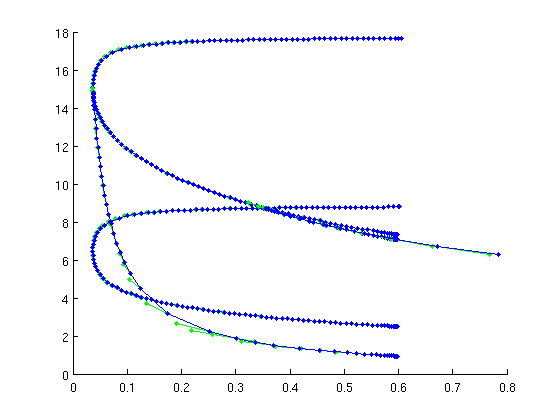

Minimal demo - Folds and torus bifurcations of periodic orbits
This part creates the computations that require the extension ddebiftool_extra_psol. This demo requires minimal_demo_stst_psol.html to have run beforehand.
(c) DDE-BIFTOOL v. 3.1.1(86), 07/01/2015
Contents
Find fold of periodic orbits
Similar to SetupHopf, one can use SetupPOfold to initialize a branch of fold periodic orbits, starting from a fold discovered by either a fold in the parameter or a change in stability along a single-parameter family of periodic orbits. However, SetupPOfold has the additional output argument pfuncs, which defines the extended system with the help of the user-defined functions in funcs.
function [pfuncs,pbranch,suc]=SetupPOfold(funcs,branch,ind,varargin)
Inputs:
- funcs: problem-definition structure with user-defined functions
- branch: branch of periodic orbits (psol type) along which the fold was located
- ind: index in points array that is closest to fold (for initial guess)
Outputs
- pfuncs: functions used for extended DDE
- pbranch: fold branch with first point (or two points)
- suc: flag whether corection was successful
Other inputs are name-value pairs, the most important are
- contpar (integer default []): indices of continuation parameters,
- sys_deri (default 1e-4): used for finite differencing when approximating jacobian of rhs, will be replaced by funcs.sys_deri if funcs.sys_deri is provided by user
- correc (logical, default true): apply p_correc to first points on fold branch
- dir (integer, default []): which parameter to vary initially along fold branch (pbranch has only single point if dir is empty)
- step (real, default 1e-3): size of initial step if dir is non-empty
- hjac (default 1e-4) deviation for numerical derivatives if needed
disp('Find and continue fold of periodic orbits in tau and b'); ind_fold=find(nunst_per==0,1,'first')-1; per_orb.parameter.max_step=[1,0.5]; % remove step size restriction [pfuncs,pbranch,suc]=SetupPOfold(funcs,per_orb,ind_fold,... 'contpar',[indb,indtau],'dir',indb,'step',-1e-3,'print_residual_info',1); if suc disp('POFold initialization finished'); else warning('POFold initialization failed'); end
Find and continue fold of periodic orbits in tau and b it=1, res=3.75294e-05 it=2, res=0.00717389 it=3, res=7.01933e-05 it=4, res=3.21541e-08 it=5, res=5.78634e-09 it=1, res=0.00420602 it=2, res=8.20325e-09 it=1, res=0.0100461 it=2, res=0.000400636 it=3, res=3.83424e-06 it=4, res=3.63444e-07 it=5, res=4.55071e-09 it=1, res=0.000589369 it=2, res=5.89413e-09 POFold initialization finished
Continue the fold in tau and b toward decreasing b
The outputs of SetupPOfold get passed on into br_contn to perform the continuation of folds of periodic orbits.
figure(1); pbranch=br_contn(pfuncs,pbranch,60);
it=1, res=0.00106815 it=2, res=3.28796e-07 it=3, res=9.1715e-09 it=1, res=0.00153169 it=2, res=3.38639e-07 it=3, res=2.92177e-08 it=4, res=6.70141e-09 it=1, res=0.000402755 it=2, res=1.19059e-08 it=3, res=5.45803e-09 it=1, res=0.00223242 it=2, res=6.96821e-07 it=3, res=1.36168e-07 it=4, res=5.76618e-09 it=1, res=0.00322294 it=2, res=1.30574e-06 it=3, res=4.21455e-08 it=4, res=4.96556e-09 it=1, res=0.00468609 it=2, res=2.28358e-06 ...
Find first torus bifurcation
The function SetupTorusBifurcation works in the same way as SetupPOfold. It returns an extended system suitable for continuation of torus bifurcations of periodic orbits, and the initial piece of branch with the first two points already corrected (if desired). Starting point is the last periodic orbit in per_orb with 3 unstable Floquet multipliers.
disp('Find and continue 1st torus bifurcation in tau and b'); ind_tr1=find(nunst_per==3,1,'last'); [trfuncs,trbranch1]=SetupTorusBifurcation(funcs,per_orb,ind_tr1,... 'contpar',[indb,indtau],'dir',indb,'step',-1e-3,'sys_deri',1e-6); disp('TorusBif initialization finished');
Find and continue 1st torus bifurcation in tau and b TorusBif initialization finished
Continue torus bifurcation in parameters tau and b toward decreasing |b
(turns around in Hopf-Hopf bifurcation)
figure(1); trbranch1=br_contn(trfuncs,trbranch1,50);
Find 2nd torus bifurcation
There were two torus bifurcations along the per_orb branch. So, we continue the second torus bifurcation, too. Starting point is the first stable periodic orbit in per_orb.
disp('Find and continue 2nd torus bifurcation in tau and b'); ind_tr2=find(nunst_per==0,1,'last'); [trfuncs,trbranch2]=SetupTorusBifurcation(funcs,per_orb,ind_tr2,... 'contpar',[indb,indtau],'dir',indb,'step',-1e-3,'sys_deri',1e-6); disp('TorusBif initialization finished');
Find and continue 2nd torus bifurcation in tau and b TorusBif initialization finished
Continue 2nd torus bifurcation in parameters tau and b toward decreasing |b
figure(1); trbranch2=br_contn(trfuncs,trbranch2,60);
Save all results --
A separate script checks the Floquet multipliers along the newly computed bifurcating orbits. Final results in minimal_demo_plot_2dbif.html.
save('minimal_demo_results.mat');